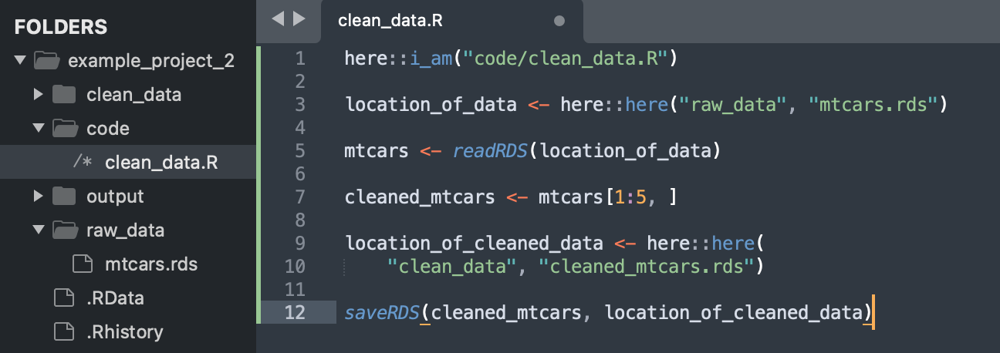
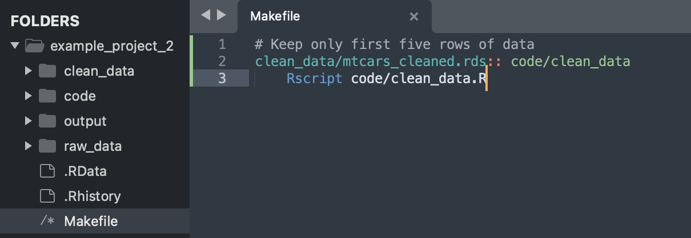
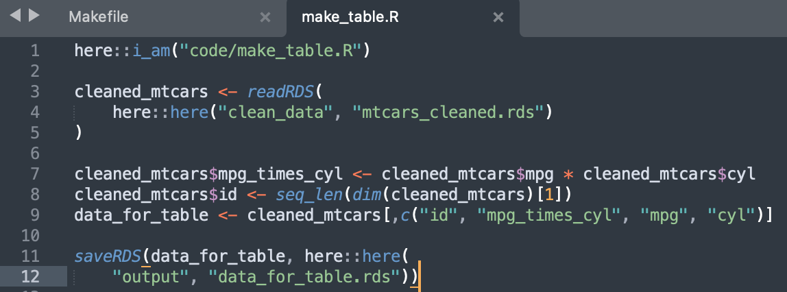
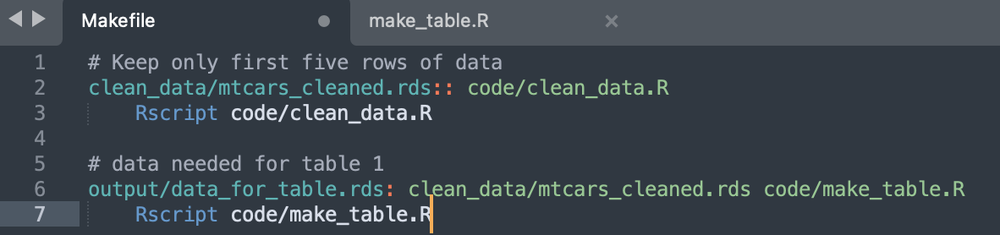
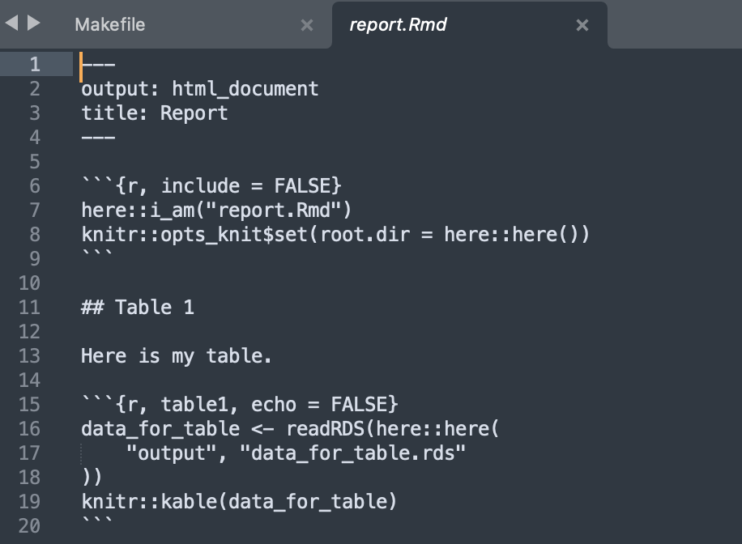
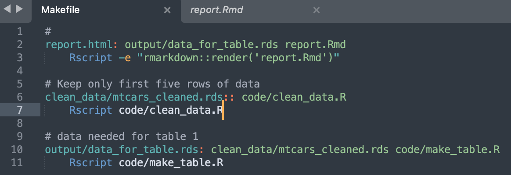
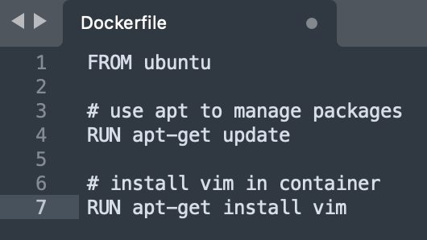
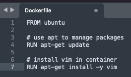
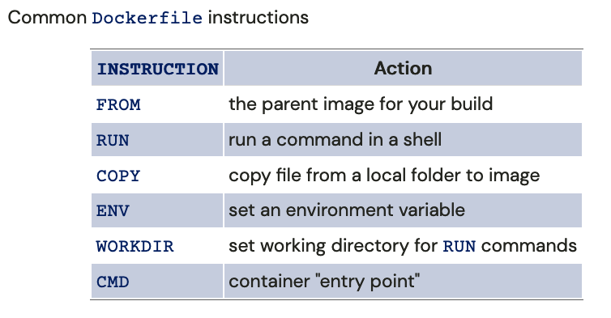
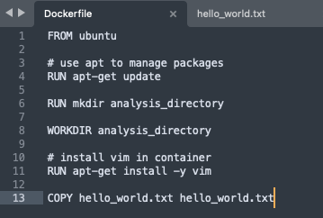

This is part 1 of my notes on Docker for reproducible research from Data Science Toolkit, by David Benkeser.
Q: Can we review project organization?
In the terminal:
mkdir example_project_2 \(\quad\quad\quad\text{: make directory }\)
subl example_project_2 \(\quad\quad\quad\quad\text{: open in sublime }\)
Then in a terminal in sublime create some folders:
mkdir code \(\quad\quad\quad\quad\quad\quad\quad\text{: make directory }\)
mkdir raw data \(\quad\quad\quad\quad\quad\quad\text{: make directory }\)
mkdir clean data \(\quad\quad\quad\quad\quad\quad\text{: make directory }\)
mkdir output \(\quad\quad\quad\quad\quad\quad\quad\text{: make directory }\)
In the terminal:
R \(\quad\quad\quad\quad\quad\quad\quad\quad\quad\quad\quad\text{: open R }\)
data(mtcars) \(\quad\quad\quad\quad\quad\quad\quad\text{: load mtcars data set }\)
head(mtcars) \(\quad\quad\quad\quad\quad\quad\quad\text{: show head of mtcars }\)
getwd() \(\quad\quad\quad\quad\quad\quad\quad\quad\quad\text{: get working directory }\)
saveRDS(mtcars, “raw_data/mtcars.rds”) \(\quad\text{: save as .rds file}\)
saveRDS(mtcars, “raw_data/mtcars.RData”) \(\quad\text{: save as .RData file}\)
q() \(\quad\quad\quad\quad\quad\quad\quad\quad\quad\quad\quad\text{: quit R }\)
y \(\quad\quad\quad\quad\quad\quad\quad\quad\quad\quad\quad\text{: agree to quit }\)
rm raw_data/mtcars.RData \(\quad\quad\text{: remove data from folder}\)
Note that .Rds is preferred.
[command] [N] : to create a new file.
Then save that file in the code directory as “clean_data.R” with the following code:

Note the 3 different places the here package is used.
[command] [N] : to create a new file.
Then save that file in the project directory as “Makefile” with the following code:

In the terminal:
make clean_data/mtcars_cleaned.rds
Rscript code/clean_data.R
Verify data is in clean_data folder
[command] [N] : to create a new file.
Then save that file in the code folder as “make_table.R” with the following code:

Now update the Makefile with the following:

In the terminal:
Verify contents in output folder.
[command] [N] : to create a new file.
Then save that file in the project directory as “report.Rmd” with the following code:

Update the Makefile with the following:

In the terminal:
make report.html
open report.html
Q: why doesn’t git / github recognize empty folders?
A: git doesn’t care about empty folders in directory.
In terminal
rm output/* \(\quad\quad\quad\quad\text{: remove everything in output folder}\)
gitinit \(\quad\quad\quad\quad\quad\quad\text{: initilize git}\)
git status \(\quad\quad\quad\quad\quad\text{: status}\)
Notice the output folder isn’t included.
cd output \(\quad\quad\quad\quad\quad\text{: change to output directory}\)
touch .gitkeep \(\quad\quad\quad\text{: add empty file}\)
ls -a \(\quad\quad\quad\quad\quad\quad\text{: list all files}\)
cd .. \(\quad\quad\quad\quad\quad\quad\text{: change directory up one level}\)
gitstatus \(\quad\quad\quad\quad\quad\text{: status}\)
Now the output folder is visible.
The problem: there are things on your computer that have nothing to do with R that R depends on. R wont help you track those dependencies. Renv only helps make sure R packages are up to date.
You can download R code from github, but that doesn’t mean you can run it.
running code requires software
we want a way to package up all analysis and code AND software
Containerization gives us a way to do this.
Think of a Docker container as a virtual machine:
Hos its own (Unix) operating system
Has its own file system
Has its own software application
(A computer within a computer)
Docker image:
source code, libraries, dependencies, tools, and other files needed to run a container.
a blueprint for the enviroment in which you will execute your analysis
Docker container:
created when we run an image
contruct a run-time enviroment to execute your code
or provide an interactive way to excecute code.
Docker installed program.
Write a Dockerfile, plain text that tells Docker what to put in image.
build the image
run the image (creating container) to execute code.
In the terminal:
This is installing an empty ubuntu operating system.
If you have issues with this step check out this stack overflow link here or here.
In a different terminal on your computer:
Back inside docker terminal:
touch my_file_in_my_container \(\quad\quad\text{: add file to container}\)
exit \(\quad\quad\quad\quad\quad\quad\quad\quad\quad\text{: container stops running}\)
docker container ps \(\quad\quad\quad\quad\text{: see the docker container no longer exists}\)
docker run -it ubuntu /bin/bash \(\quad\quad\text{: start a docker container}\)
Notice this is a different container, and the file that was created no longer exists.
Containers are transient!
In the terminal:
mkdir docker_ex \(\quad\quad \text{: created docker_ex directory}\)
subl docker_ex \(\quad\quad\text{: open in sublime}\)
[command] [s] : save file as “Dockerfile”

FROM : gives a starting point at the ubuntu operating system.
apt-get: is a package management system in ubuntu
update: make sure apt-get is up to date
install vim: installs the text editor vim
Run: Docker syntax that tells it to run those two commands from the ubuntu operating system.
Now back in the terminal:
cd docker_example/
ls
docker build -t ubuntu_plus_vim . \(\quad\quad\text{build docker file from current directory (thats what "." means)}\)
Docker is angery because we aren’t inside the container to hit yes.
Fix: add “-y” to code (line 7) that says yes:

Now that it works lets run it.
docker run -it ubuntu_plus_vim /bin/bash \(\quad\quad\text{: open up ubunto with vim that we just created}\)
vim \(\quad\quad\text{opens text editor for editing}\)
:q \(\quad\quad\quad\text{to quit vim}\)
If you need to put a special piece of software inside a container you would google “how to install ____ on ubuntu”, because that is being installed.

create a new hello world file.
Now add the following line to your dockerfile:
COPY hello_world.txt home/hello_wolrd.txt
In the sublime terminal:
docker build -t ubuntu_plus_vim_plus_helloworld .
docker run -it ubuntu_plus_vim_plus_helloworld
ls
cd home
ls
cat hello_world.txt
exit
This will be useful so that we can copy our code into the container.
### WORKDIR
Sets the working directory for all of your commands.
Reason: We don’t always know what the directories are within docker (like home in the previous example), so we want docker to the directory where our project lives.
Update Dockerfile with the following:

In the terminal:
docker build -t try_workdir .
docker run -it try_workdir /bin/bash
Notice that we start out in the analysis_directory, and inside the directory is hello_world.txt.
### CMD
Continers entry point: what is the container going to do by defualt?
Use cases:
interactively run bash: CMD /bin/bash
open R: CMD [“R”]
run whole analysis and produce report: CMD Rscript -e “rmarkdown::render(…)”